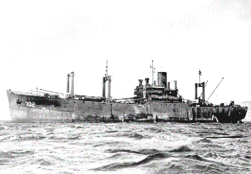
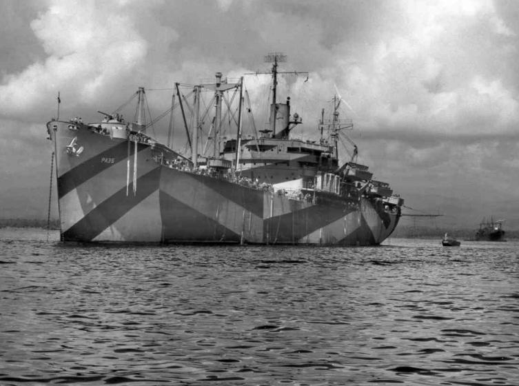
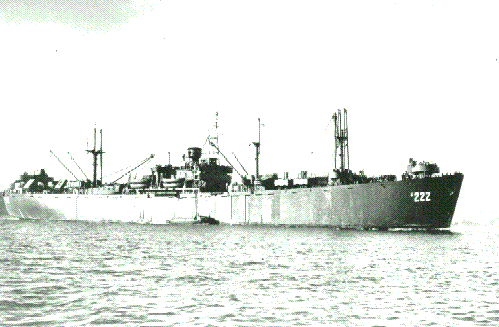
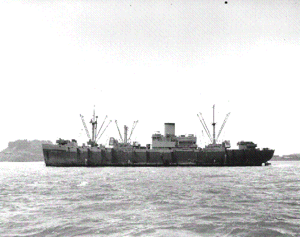

Go to Home Page
Some Ships we sailed on.

The USS LaSalle - Our voyage to Roi-Namur.

The USS Callaway - Our cruise to Saipan.

The USS Livingston - Landing drills at Maui.

The USS CapeBon - Transport for causalities
Go Top
Go to Home Page
Photos
provided by Orvel Johnson
Page created by Rowland Lewis
Last Modified
03/16/2000